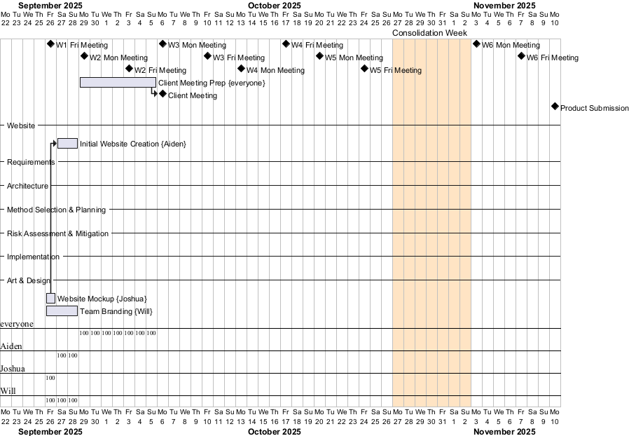
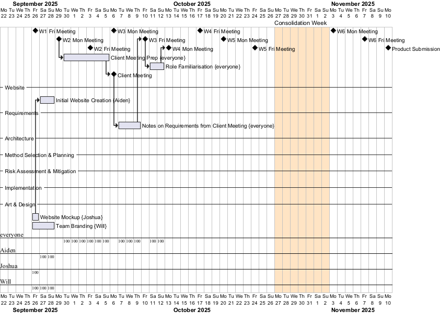
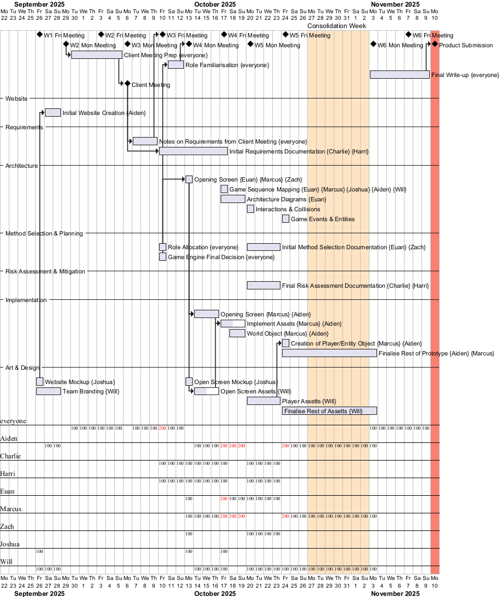
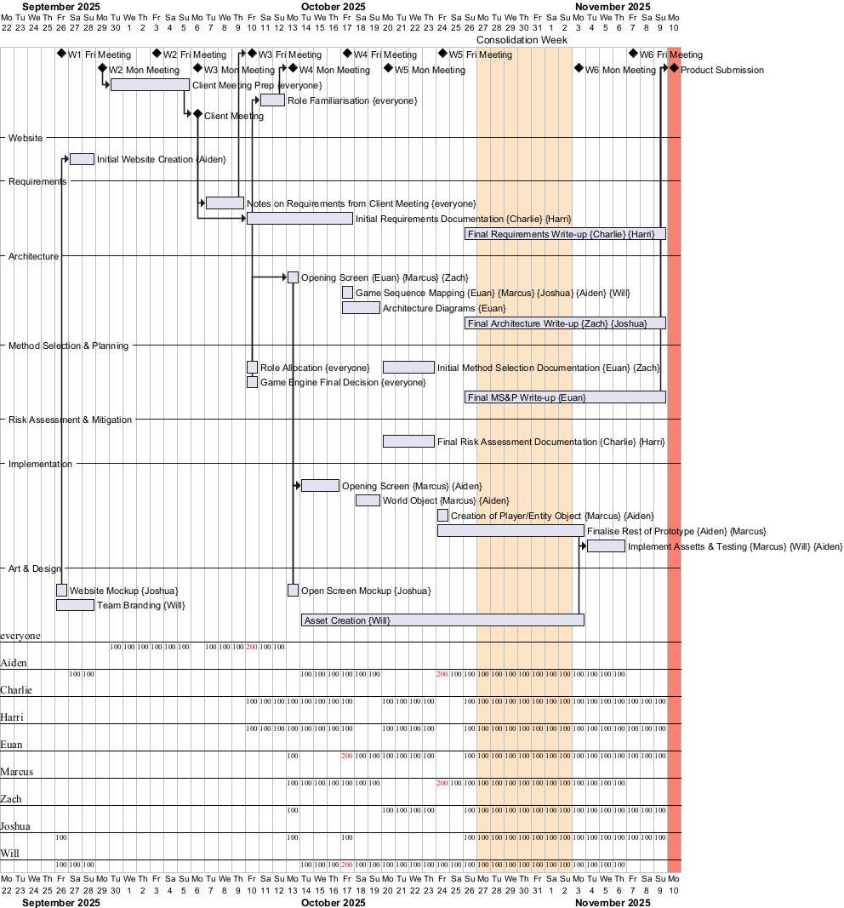
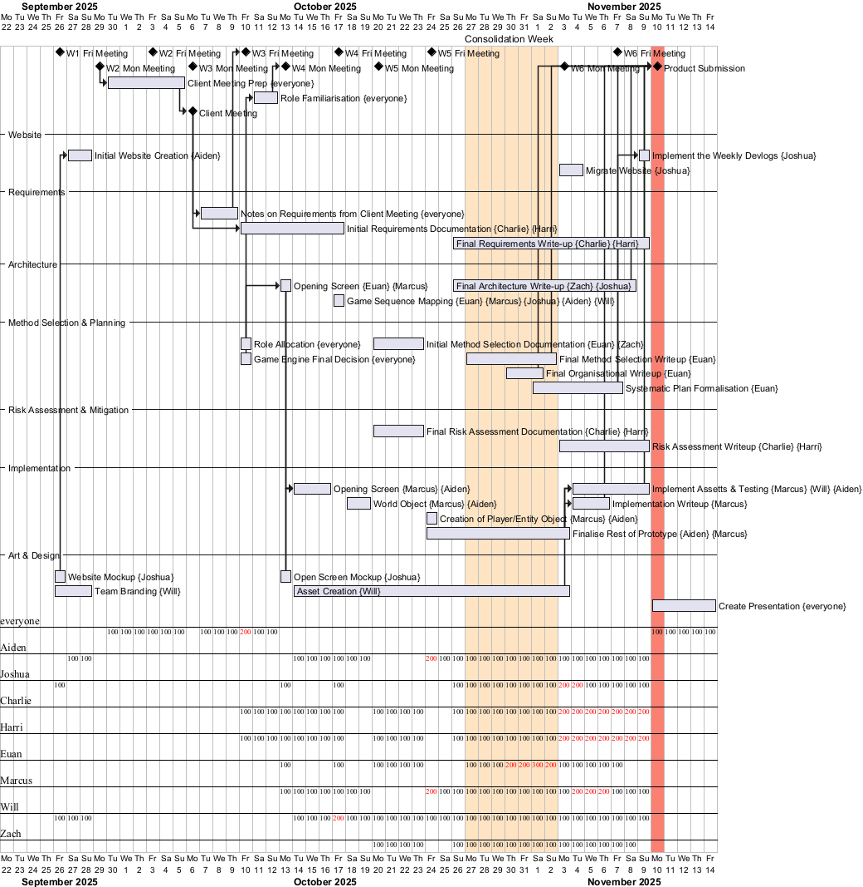

Devlog
Assessment 2
Week 7 - Making presentation and picking project
We made our presentation to give to the other groups on Friday to show our project and our documentation and explain why other groups should pick ours. In the lab, we also began to plan which groups projects we would want to take over by looking at their code and deliverables. We each looked over the other groups projects to decide which one we individually thought would be best to continue with.

Week 8 - Picking project and new requirements
We picked a suitable project to take over by voting as a group and came to the decision of team 11. We then began to read over the new requirements and plan the achievements. We also assigned primaries and secondaries to each of the new deliverables based on what we each wanted to do for the second assessment. We also set up the headless backend so we could begin testing as soon as possible as we knew that this would be a priority. We also began the change report by writing up D2a.

Week 9 - Plan CI, start implementation, start testing, change report.
We began to start testing the game in its current state to prepare for starting implementation. We used manual testing for this. There were a few bugs that were fixed before we could add in any new events. We started changing the documents for the change report starting with the risk assessment. We also began to plan the new events and achievements using some of the assets provided by the previous team. We did this early on so that we could aim to start implementing as soon as possible. We also wanted to start setting up some unit tests.

Week 10 - Testing, implementation - fixing old code, plan user evaluation
We started adding in the new events and achievements on implementation while still continuing with testing and fixing the bugs and refactoring the code associated with this as they were more extensive than we first thought so needed longer. We also began planning the user evaluation tests and preparing all the forms as we are aware that this will be needed soon. We also prepared the documents for the manual tests that will be completed once all the implementation has been completed. The architecture document is also being changed to fit with the code structure.

Week 11 - Implementation, complete user evaluation
We have continued with implementation, focusing more on the individual events. The achievements are now all implemented as well and this was completed alongside the event implementation as we have many people working on implementation to get this finished as quickly as possible. CheckStyle has now been added to automatically check the style of our code on each pull request. User evaluation has been fully planned and executed during the lab session. The old method selection and planning document has also been updated to fit our current workflow as a team.

Holidays - Continue implementation and testing
We continued to add more unit tests and finished implementing the events. We then added in the scoring system and leaderboard. The usability problems are written up and the ones with the highest severity scores are acted upon by changing or adding to our game. By the end of the holidays, all the unit tests had now been completed. These were originally done by one team member but towards the end of the holidays, we realised that all team members were needed to implement unit tests so that we could finish in time. The changes to architecture were also extended into the holidays as they were not completed on time and did not yet accurately represent our current system. The documents were added to the website as they were completed. The test report is also started while the final unit tests were being implemented.
![Holidays](https://www.plantuml.com/plantuml/img/fLTBSvim4BxpA_RMasSCVYMtUf8-qcbcEd4pEMHw4B2srO1m9P7KpUI_ToMS841WTtfAmDAtt-v---2zqapg3HDQGw2vpX2MIg5IEGeD4NpdEMPS80JVPF4J4mtsWe9e7Cr6OJWAn_GBfxCnwYT4uVm0JAJcSJuQq-Cq2EwlsGCN6zX9L0JFD2_43oW4F7zuHBal1Bvqu2SM9MEANauWPNi51FID9myWy8cWBAjZA5C7PLQZP4nO57maEigUOScMqwDnN_teu9pxsPoAmzOQ9NJPlrE0T2S8Wj48xZ1MN2FGly7zxIwbC57CdggtbQChbhTyZFguVKTbx-UCJ7EMcVj7iIPZ1slwXhLCKqX93XHc5cUeG1U3M3RnuyY7PHozs3AnGRZ1NI6rTJUuJy_f-LV9vMlaR5xpdBqyVyMYazWez2Os3KEuuUh1qRA3r05PE23p6kGCbfAog2b3fJnus2KHDJsCpcg01LoZtXOfh30Z45AxFMZa8YWdlPG8qatcuWtnCcBmfQI4hdbYgmUADIMXoDIGUtDlCYyaLihwP8i_sTfBwq92kXXW5lg3DOpMbF_HkBoL0paSTnskTAC6I3PaiN0rTvNlCYkj2gqItKV-sr2Fouq2JYOatt11fP8KgIFivpkc-Fhb-JFB_tYYVERDs0skMQ89aV0D752SqhqDJDqmJhNHAClvlzfe9c7Gvpe1fkIvw70zqFJrZh4R-x3PF5f8JKQdkT6XvZHQK8ca4UGsZOhe8CTPcw8FyV-ehfBgh3LAHmaZBfXCtM1s2ktCMxRzK4sAtN0xLJM9uKcQ6LFkXghelAzplmwLgdnMg0a8TFMoRwgqfcSTzMicIXBUuRgv_IR63SjFBy2PjpZiRCvh4rLJMblul66vChGK-9kTe6odaMunULZfFQrEd6hfjS5WEZ2hnzvPVIkuFf3SRPb22Fk36KtzPUR3Q2gZbQvQ5fshKRy7OrUTr6vxpKTjynw2zVhJ_NKokDgrH4fnxIKoEKeaSaja6bkLKsMRxSGHOIMG3Wqt7k7CBPPRHTO-FBAiT6VEvOozJa4ZoDQXXXQzEqV_9cf6AEWj5RV1nDCnUrGvZDcCwH6lwlXU5APEz07GLu66uM0JRtmQM0LMSOt9B8jvnlNUBDYqgERgb7RN-4YetJyAs8o0tx5QuNRnBGIzBOjImHKrYeri26FE-WuiTsIUffCxuBozmR-BNCxZFkGhiPPqMfREgkij--X_aLjwES7PEdRlwQ_zLFqB)
Revision week - Final touch ups
The primaries on each deliverable are completing the final checks on their documents to ensure that all the information needed is included. They are then uploaded to the website alongside the updated Gantt charts and the traceability matrix. We also prepared for the presentation by making the PowerPoint and rehearsing the presentation.
![Revision week](https://www.plantuml.com/plantuml/img/fLXDRziu4BthL_2s9mEM_9NSQYHjDyK6AE86FGGzK19jSoEHBaabzGRvxpiYPOiKALb5Rv55FhwPUM-6oWUfi50xp9H2aQAg86Wj9P6o94oX17sZ9Iae8oZwAlY_95D8Rv0ecIQBIHnFuYcyeR0s9UgL46QzG9ZbzUDoCeN7UHGztUDdodRe88W4UAmePpyGP-ZjumiHHyx8kmS_qoW5bl3Z3ENuA140VQNPCsBa5Q0qgqieSmjbqQ8Kc6aKyW9qf5w3ips5npfy-SF3kGwp6Ok3jue8vBF_Io82Uw8ecapGTv9AgWY2FwEdnqCEQOASlPfVJQ0RN7PYJFguVIDIxoyn74rnKU-_Y3MRMbZpCzOwpr4ESe0quxGW4Ya-YAKBFqrwiJvhsMLxlNuKrhBPgNupgcQtfmA0-qGPx6ys0ncIFGz0s4bEJ31DsMxscEq8UY07BfGkNlIKNyFppugAamwqIiiIlx_zGxWdqoGEoZIFO_H0vRFbJ0l90rbP8CiMv0gj1MXIWTugqMJ99v6uzKgkMe0LkYTgptEq8GM0W7Vrmbhy36hHIobnixOw8zuc67sfe91RckbUWFWMPC0BEHJUCYYd6q6CJnnDRRb0-Mg0MHnErZ2QQ-QBUJcR6m9E_O2DRkG0IKSMRVgCS3CZEs5aPyct2sNqk_BrQ-HxLnuAhL93pEZt4_rLPo6jTX9HO2lepXpASyjdRz-nfDltjxzn-L-WO5T1zWzaYpC5Y81Vmq44E3_g7BUTTEmPJhzQ_kuPRZq7OsvhMNSXoZok3SrGKvtQPOpTJjX1SXcD2yEZPaqW93C1izdkFuRe8CT5bs88yS-eRZApLXyAIm4ZvLZaTZ8zpru5Eq0_b4lHJxTbq5cANaKz1wh3a26lWmoC8Qbh9CkHVHBsdJaxJnRmuMc26qjkY09ofm7ODy8xLvMsalUOLK3oD3-v9V0TBiURUX4qdBu8bUqHfcTkDNpfd6mEMZFo2uzmYzNdwtHkr17kgLIskIRvmCLe6hmOFJAg6fA7FPO4nVt9JEPXwuOmNBLrojLApTkQz4SmjHKFqw3t-AHxV81WUzVqtyu6xz4TuI_xUSmkyaXiryrJBV9cY5aQDFhmh38Vc8SdPNSkSdrG8TSr4_5H0lEFBxYex95uky2dULzhkxF8aNNmTjN_1L5V5f3QG--fCSbup1w13sEwzRaGLLkh6rvRJZM08JFN30TdZFD9fyLiyfh2iJYb1LN7-iC8FZ1AEQOREnztRVWN0TqCX0Dh0pVgwgJHLfcEUxpAekQhWJCugEALH7VGndR2qTeIzorO7o0YcCVsI0zshl3jwtQPzY7ViQs0rQAolXE2JIdvK-IE14S4sor7rgwdrlgkzozVXSz5-G3u-hyX_mC0)
Assessment 1
Week 1
As of week one, we met as a group for the first time on Friday. Current tasks assigned include: the creation of the website mock {Joshua}; implementation of the initial website {Aiden}; team branding {Will}; and familiarisation with the product brief to prepare for the first client meeting {everyone}—no tasks running behind at this stage. Website creation is dependent on a website mock-up.
Week 2

As of our Monday Meeting this week, all tasks set last Friday have been completed. For the remainder of the meeting, progress has been made on preparing for the client meeting, which is the team's sole task at this stage. Ideas for style and gameplay have been placed in the private Google Drive, and a shared questions document has been created and shared. A shared GitHub organisation has been made.
As of our Friday meeting, client meeting prep has continued, and the meeting has been set for the following Monday, after the Monday Meeting next week. Continued preparations for client meetings have been made. No other tasks have been set except for ongoing preparation ahead of the client meeting.
Week 3

Our Monday Meeting followed on from our previous meeting on Friday. The meeting concluded with the Client Meeting. All members were expected to take notes on requirements gained from the client meeting and bring them to the next meeting on Friday.
Our Friday meeting started with discussions on role allocation and responsibilities. The decision was made to form teams based on each deliverable, and the size of each team was determined by the marks provided for each deliverable. Roles were recorded on a Google Sheet created by Aiden prior to the meeting. The rest of the meeting involved individual teams discussing what needed to be done. At the end of the meeting, team members were instructed to take the weekend to familiarise themselves with their respective roles and reconvene on Monday, when a timeline for the remainder of the project would be drafted.
Week 4

Our Monday meeting began with an in-depth discussion on the project's remaining timeline, led by the Method Selection and Planning team and the Scrum Leader. Through this discussion, a shared Trello page was created to keep an informal timeline of the project. General themes for weekly tasks have been set for all subsequent weeks up to the project's completion. The latter half of the meeting involved smaller discussions between individual deliverable teams. The requirements teams continued their documentation, as most of the development depends on it. The Architecture, Art, and Implementation teams decided to start on the opening screen as an easier first task to familiarise themselves with the workflows.
At our Friday meeting, with most of the initial requirements documented, we could begin work on the architecture of the central gameplay portion of the prototype. Most of this meeting’s discussion centred on a high-level game sequence and the architecture of the world object, with the intention of implementing the world object over the weekend. Currently, the only task running behind schedule is the creation of open screen assets, but this has not significantly impacted the project, as we are presently using placeholder assets.
Week 5

During our Monday discussions regarding assets and the choice to use placeholder assets during development, we have allowed ourselves to push forward with development without the dependency on assets beforehand. This has meant that we have opened the window in which they need to be created and intend to implement them in the later part of the development. Architecture diagrams are also behind; however, the discovery of a functionality in IntelliJ has meant that this task can be done automatically after development. Discussion of architecture is now being held with input from both architecture and implementation teams, given the current pace of development. We have discussed both events and player/entity objects.
During our Friday meeting, the discussion centred on preparations for work to be done during Consolidation Week. This will mainly consist of final deliverables write-ups, completing the prototype, and then final ‘Beautification’ in week 6 when we reconvene. Due to unforeseen circumstances, some roles have been reassigned to ensure all deliverables are completed on time, with a portion of the responsibility being allocated to team members who have already fulfilled their respective tasks.
Week 6

During our Monday meeting, we discussed progress made during Consolidation Week. Requirements have been in an almost final state for two to three weeks, so a final write-up is on track. Most Assets are finished, so progress is being made on implementing them. Testing is also on track. The decision to migrate the website to a GitHub URL has been made, and implementing fonts and the Devlog section has been set as a task. The architecture write-up is currently behind schedule, so Joshua has shifted all resources to assist Zach. Risk Assessment Final write-up is on track. The Method Selection & Planning write-up is slightly behind schedule but is on track to be finished by Friday. The Friday meeting is set, as well as a possible meeting on Wednesday or Saturday.
As of our Friday Meeting, most write-ups are nearing completion or are complete. Risk Assessment and Requirements are complete. All other write-ups are set for completion within the next day. A meeting is scheduled for Saturday to finalise testing and review write-ups.
As of our Saturday Meeting, all write-ups have been completed and are awaiting final formatting ahead of submission. Testing and minor adjustments have been made to the final gameplay, and development of the mapping tool has been completed to support map creation for future growth. Minor adjustments have been made to specific assets. Submission set for Sunday.